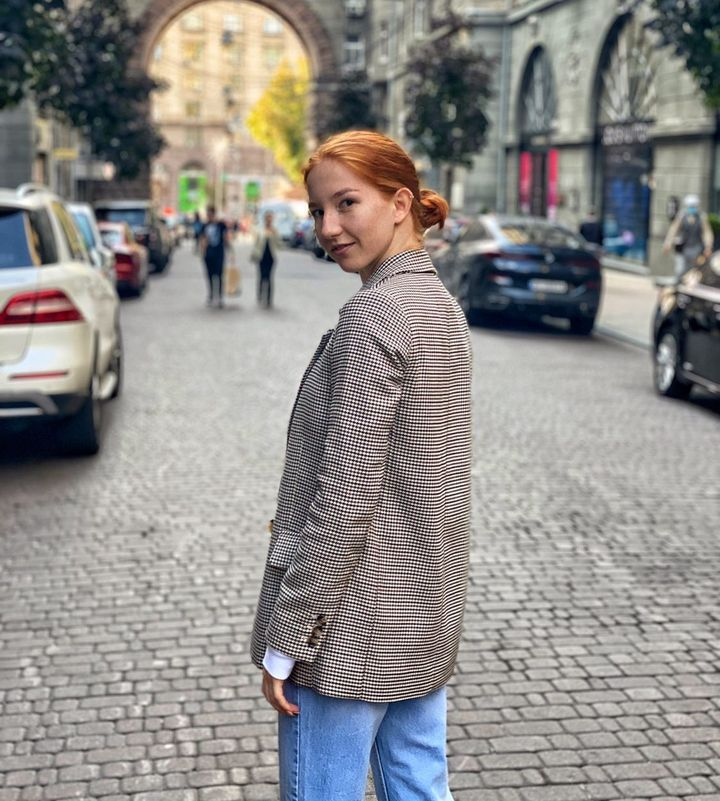
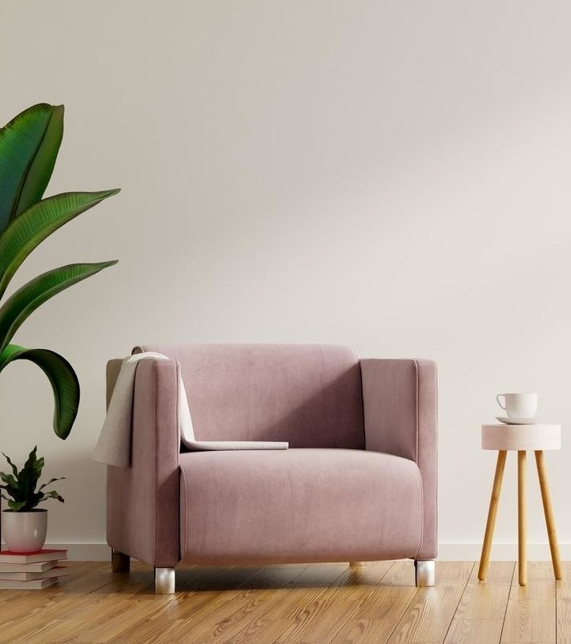
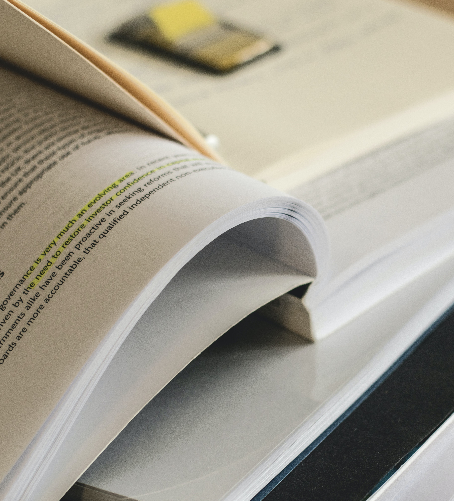

Допоможемо розвинути потенціал дитини
А також адаптувати до мікро та марки соціуму

Скориставшись моєю допомогою, ми зможемо
Провести корекцію емоційно - поведінкових особливостей
Розвинути у дитини емоційно-вольову та когнітивну сфери
Формування до навчальної діяльності та
самоорганізованості
Формування готовності до життєвих складнощів та задач
Перелік ознак, що свідчать про необхідність
допомоги спеціаліста
Вікові кризи
Під час вікових криз дитина може і повинна проявляти протест. У 3, 7 і 12
років цілком нормальні
істерики, безпричинні образи, замкнутість. Якщо ж в ці періоди дитина не
проявляє подібних
емоцій - це якраз привід звернутися до психолога. Дитина скоріш за все
пригнічує їх й тримає в собі. Рано чи пізно ці емоції
проявлять себе в гіршій
формі.
Спілкування
У багатьох дітей є проблеми з комунікацією. Їх потрібно налагодити в
дитячому віці, щоб в
подальшому малюк не став ізгоєм у суспільстві. До психолога потрібно
сходити, якщо дитина
відмовляється ходити до школи. Якщо дитині некомфортно в колективі, її
ображають, з нею не
хочуть дружити, вона може замкнутися в собі. Якщо ви чуєте від дитини фрази
на кшталт «У мене
немає друзів», «Зі мною не хочуть дружити», «Ненавиджу всіх», це тривожний
дзвіночок.Також
важливо не упустити момент, коли дитина перестає спілкуватися з батьками.
Якщо малюк різко
віддалився, перестав ділитися з вами своїми переживаннями, це повинно
насторожити дорослих.
Агресія
Якщо дитина постійно проявляє агресію по відношенню до оточуючих, конфліктує
з дітьми і
дорослими, грубо спілкується з батьками і вчителями, це привід звернутися до
психолога. Оксана
Дон зазначає, що така поведінка дитини може свідчити про внутрішній конфлікт
або дискомфорт.
Завжди є труднощі, з якими діти не можуть впоратися самотужки.
Шок
Обов'язково слід звернутися до психолога, якщо малюк пережив шок,
насильство, смерть близької
людини або будь-яку іншу важку життєву ситуацію. Навіть бійка, що сталася на
очах дитини, може
привести до того, що малюк замкнеться в собі. Всі дитячі страхи потрібно
опрацьовувати. Чим
раніше, тим краще.
Смуток, тривога
Час від часу діти плачуть, засмучуються через оцінки в школі або сварки з
друзями. У всіх
бувають невдалі дні, але зовсім інша справа, коли такий настрій супроводжує
дитину тривалий
період часу.Звернутися до психолога потрібно, якщо поганий настрій заважає
дитині виконувати
рутинні справи, займатися навчанням, спілкуватися з друзями. Якщо у малюка
почалися проблеми зі
сном, пропав апетит, якщо його мучать головні болі та болі в животі, але
лікарі кажуть, що він
здоровий.
Про себе

Машовець Марія Костянтинівна
Закінчила Національний педагогічній Університет ім.
М.П.Драгоманова
За освітою спеціально клінічний психолог (бакалаврат та магістратура).
Працюю у школі 4 роки з звичайними дітьми та з дітьми які мають особливі освітні
потреби.
Тому маю різноплановий досвід спілкування і роботи з дітьми.
Послуги

Індивідуальна консультація
Очна психотерапія або психологічне консультування в
індивідуальному форматі дозволяє ефективно працювати з проблемою.
450 uah
Психодіагностика та Профконсультація
Проведення тестування виявлення особистісних
особливостей, професійної спрямованості.
500 uah

Корекція
Формування необхідних психологічних якостей,
підвищення соціалізації та адаптації до життєвих умов, що змінюються.
600 uah
Для зворотнього контакту
Контакти
Запис на консультацію можливий за телефоном
+38-068-84-85-643
Також у соцільних мережах( Telegram, Viber ), або через
форму на сайті.
- Валерия
- Ernest Hemingway
- Анна